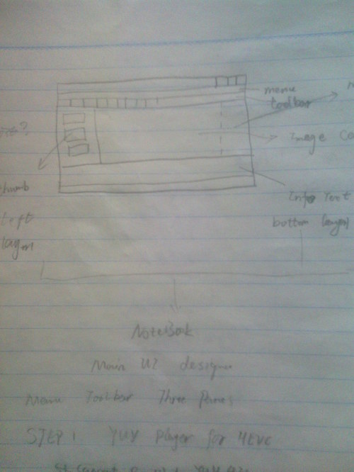
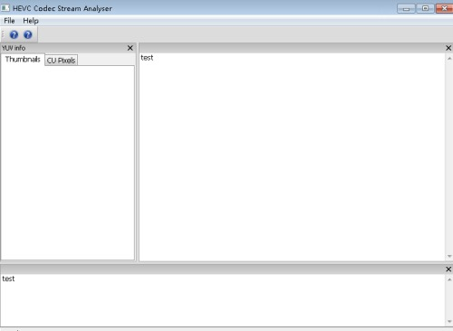
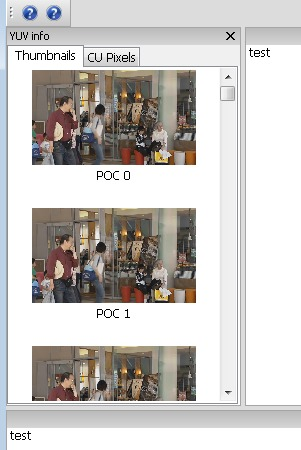
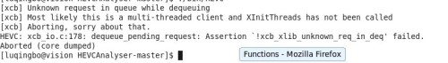
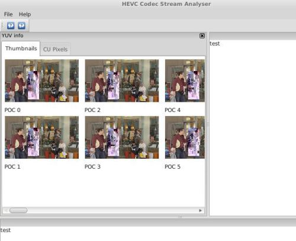

wxWidgets wxListCtrl与多线程UI更新
发表于: | 更多相关文章： wxWidgets HEVC Github Project |
很久没有编写GUI程序了，还是在本科的时候经常编写MFC程序，现在觉得作为一个IT人士，必须每隔上一段时间学习新的技术，否则会被淘汰。所以，我看了看wxWidgets这个号称跨平台的GUI库。
主要的目标是实现一个HEVC的码流分析器（HEVCAnalyzer），这是一个长远的目标，估计要花上很长时间才能把功能完善，毕竟是我和一个同学在课余时间开发，而且目前遇到了很多的问题，我把这个星期我这方面遇到的问题总结一下，记录在此。
wxWidgets的使用我就不多说了，我的第一个目标就是编写一个YUV分析器，利用到了wxWidgets的AUI布局，下面是我的一个布局的草图：

关于AUI布局，他是一个高级的布局管理，其中包含的属性Layers, Rows and Directions, Positions可以控制子窗口的位置，官方给了一个例子，效果如下（个别布局被我修改过）

所以我开始给我的项目程序设计了成了这个样子：

其中左侧是YUV的缩率图列表使用了wxListCrtl，打开之后效果如下：

其中这里使用了多线程更新UI，主要是因为如果YUV文件过大，打开处理时间过长，用户会感觉UI被卡死。使用线程控制UI更新，但是线程里面不能直接更新UI，目前是使用自定义消息发给父窗口，父窗口处理列表的更新：
启动线程：
if(m_pImage_list) { delete m_pImage_list; m_pImage_list = NULL; } m_pImage_list = new wxImageList((int)m_iSourceWidth*scaleRate, (int)m_iSourceHeight*scaleRate); m_pThumbnalList->SetImageList(m_pImage_list, wxIMAGE_LIST_NORMAL); m_pThumbThread = new ThumbnailThread(this, m_pImage_list, m_iSourceWidth, m_iSourceHeight, bit, sfile); if(m_pThumbThread->Create() != wxTHREAD_NO_ERROR) { wxLogError(wxT("Can't create the thread!")); delete m_pThumbThread; m_pThumbThread = NULL; } else { if(m_pThumbThread->Run() != wxTHREAD_NO_ERROR) { wxLogError(wxT("Can't create the thread!")); delete m_pThumbThread; m_pThumbThread = NULL; } }
线程中处理YUV to RGB转换：
void* ThumbnailThread::Entry() { m_pImageList->RemoveAll(); TVideoIOYuv cYUVIO; cYUVIO.open((char *)m_sYUVPath.mb_str(wxConvUTF8).data(), false, m_iYUVBit, m_iYUVBit, m_iYUVBit, m_iYUVBit); TComPicYuv* pcPicYuvOrg = new TComPicYuv; pcPicYuvOrg->create( m_iSourceWidth, m_iSourceHeight, 64, 64, 4 ); wxBitmap bmp(m_iSourceWidth, m_iSourceHeight, 24); int frame = 0; while(!cYUVIO.isEof() && !TestDestroy()) { int pad[] = {0, 0}; cYUVIO.read(pcPicYuvOrg, pad); wxNativePixelData img(bmp); wxNativePixelData::Iterator p(img); for(int j = 0; j < m_iSourceHeight; j++) { wxNativePixelData::Iterator rowStart = p; Pel* pY = pcPicYuvOrg->getLumaAddr() + j*pcPicYuvOrg->getStride(); Pel* pU = pcPicYuvOrg->getCbAddr() + (j/2)*pcPicYuvOrg->getCStride(); Pel* pV = pcPicYuvOrg->getCrAddr() + (j/2)*pcPicYuvOrg->getCStride(); for(int i = 0; i < m_iSourceWidth; i++) { // YUV to RBG转换 //此处省略, 具体可以参见Github项目中详细处理 } p = rowStart; p.OffsetY(img, 1); } //bmp.SaveFile(_("test.bmp"), wxBITMAP_TYPE_BMP); wxImage bimg = bmp.ConvertToImage(); double scaleRate = 165.0/m_iSourceWidth; wxImage simg = bimg.Scale((int)m_iSourceWidth*scaleRate, (int)m_iSourceHeight*scaleRate); wxBitmap newbmp(simg); m_pImageList->Add(newbmp); wxCommandEvent event(wxEVT_ADDANIMAGE_THREAD, wxID_ANY); event.SetInt(frame); //m_pFrame->ProcessEvent(event); // this method can be used in Linux wxPostEvent(m_pFrame, event); frame++; } pcPicYuvOrg->destroy(); delete pcPicYuvOrg; pcPicYuvOrg = NULL; wxCommandEvent event(wxEVT_END_THREAD, wxID_ANY); wxPostEvent(m_pFrame, event); return (wxThread::ExitCode)0; }
自定义消息处理函数（父窗口）：
void MainFrame::OnThreadAddImage(wxCommandEvent& event) { int frame = event.GetInt(); // wxString str; // str.Printf(wxT("frame %d added"), frame); // wxMessageBox(str); wxListItem item; item.SetId(frame); wxString text; text.Printf(wxT("POC %d"), frame); item.SetText(text); item.SetImage(frame); m_pThumbnalList->InsertItem(item); }
遇到的问题:
1 Linux的wxThread估计有问题 ，无法启动线程

解决方法：
在wxApp的子类的构造函数添加线程初始化函数 XInitThreads();
class HEVCodecApp : public wxApp { public: #if defined(__UNIX__) HEVCodecApp() { XInitThreads(); } #endif bool OnInit(); };
参考 http://forums.wxwidgets.org/viewtopic.php?t=32346&p=139431
2 wxListCtrl在Linux下面显示有问题，无法单列显示列表，这个是wxWidgets 2.8.12的bug，其例子也有这个bug：

我们打算使用wxHTMLListBox来解决这个bug
Comments powered by Disqus